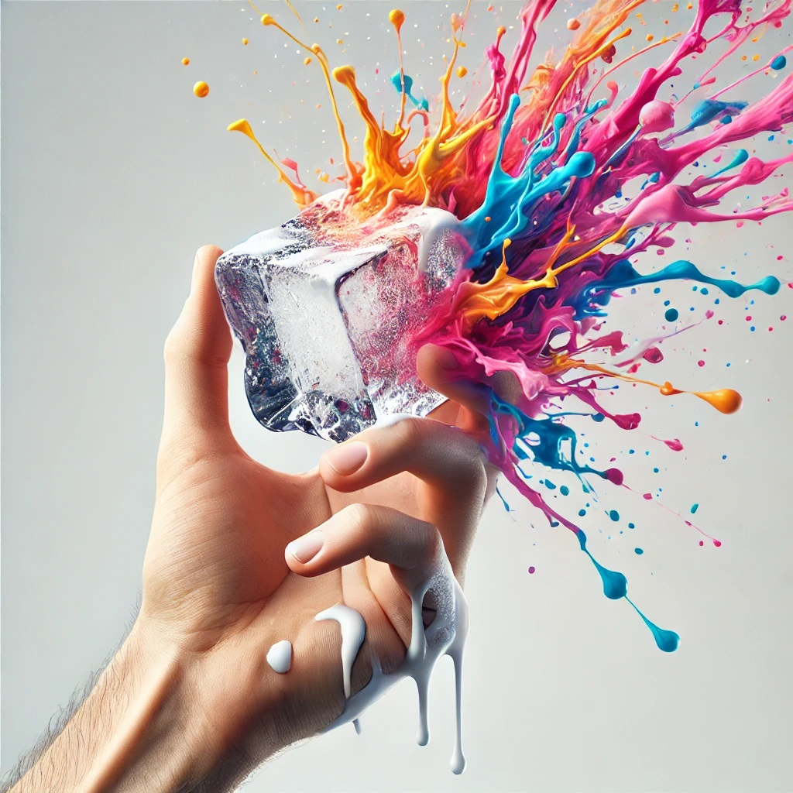
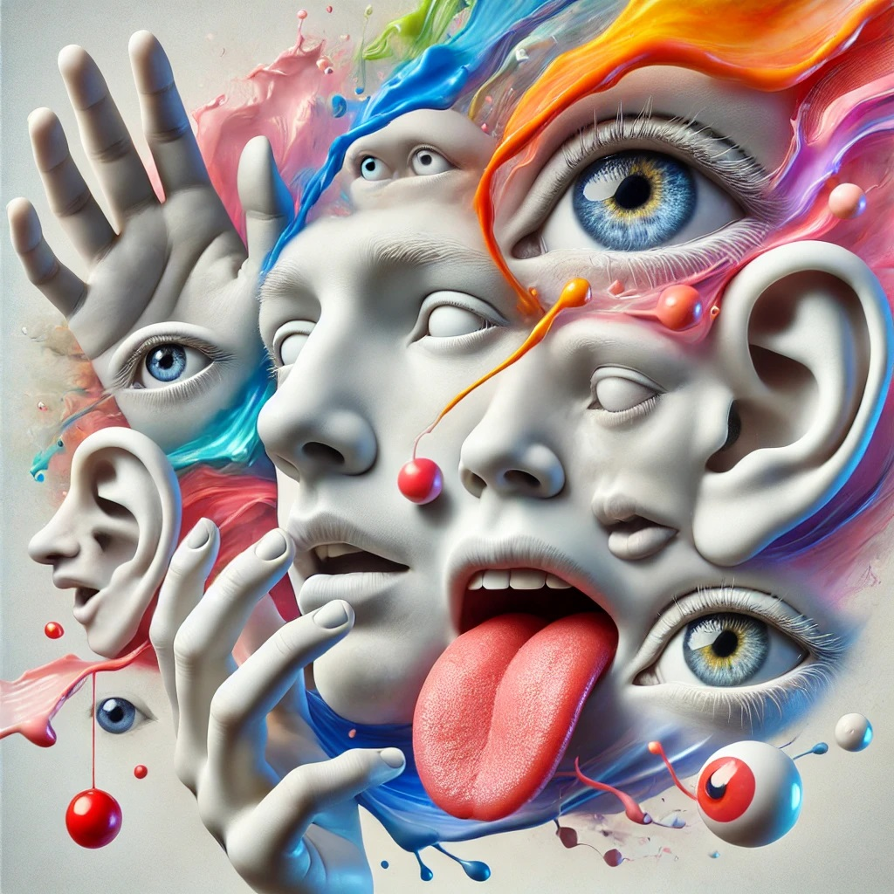
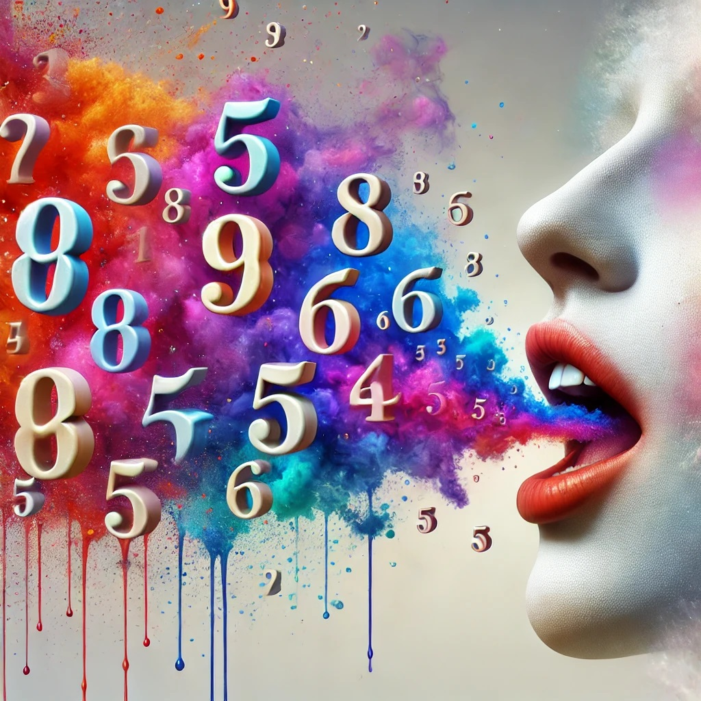
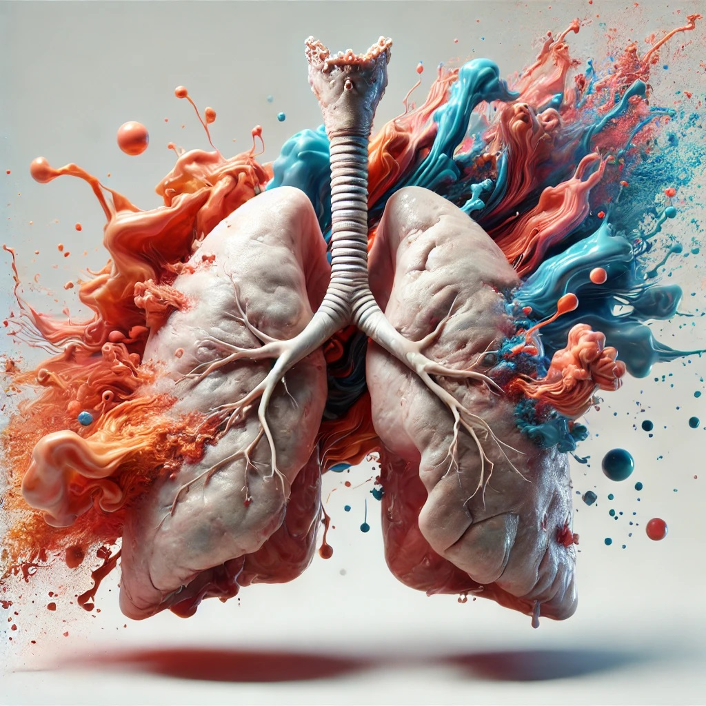

Técnica de Segurar Gelo na Mão
Método para interromper pensamentos ansiosos através da sensação do gelo.
Saiba Mais

Técnica da Descrição de Sensações
Observe e descreva detalhadamente as sensações do ambiente.
Saiba Mais

Técnica de Contagem Regressiva
Conte regressivamente para acalmar a mente e focar no presente.
Saiba Mais
Técnica de Diálogo Positivo
Pratique o diálogo interno positivo para reduzir a ansiedade.
Saiba Mais

Técnica de Respiração 4X4X4
Respire em ciclos de 4 segundos para acalmar corpo e mente.
Saiba Mais